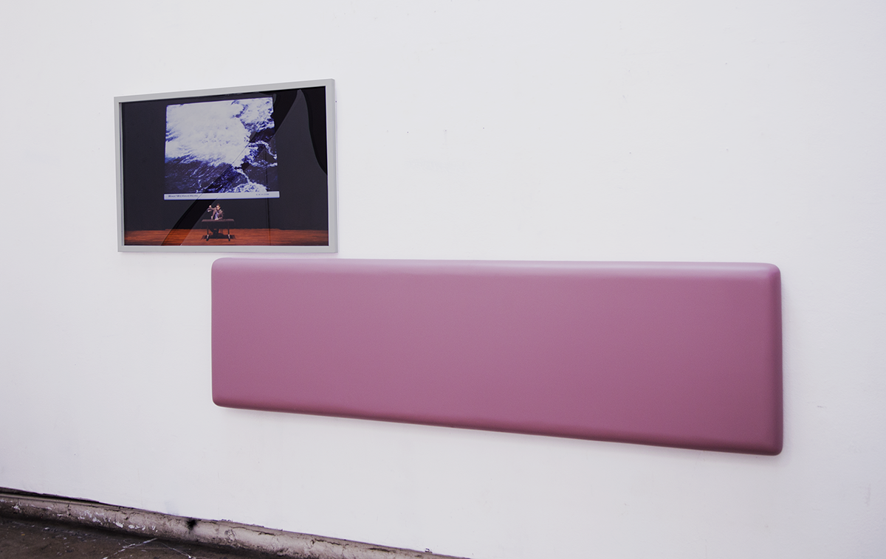
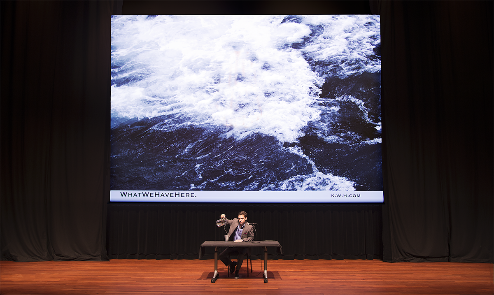
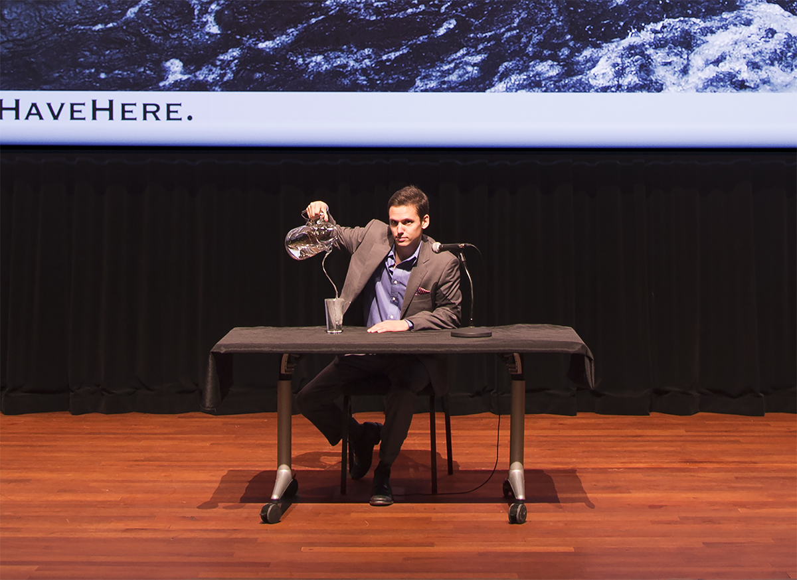

While taking a tour of an artist’s studio, I encountered the salvaged front desk of Ebony magazine’s former publishing headquarters. A three hundred pound wooden behemoth, the desk had a long cushioned shaped form as its front.

At the time, I was thinking about authority and who represents it. The desk was a powerful reminder of the strong presence certain forms can have when juxtaposed with a specific narrative. In the desk’s case, it was its history and its new home in the library of Theaster Gates. Leaving there, I knew I wanted to recreate the form embed in the front of the desk and pair it with something that would give viewers a specific body and format in which to relate it. In the style of a Ted talk or similar event, I staged a presentation where I became the authority on an Injunction gathering unexpressed set of knowledge. Stretching the position of authority further, I feigned the ability of hydrokinesis as I twirl the water that falls from the turned-over pitcher and into my cup. When presenting the image next to the wooden bumper, it is framed and the glass inside is broken.